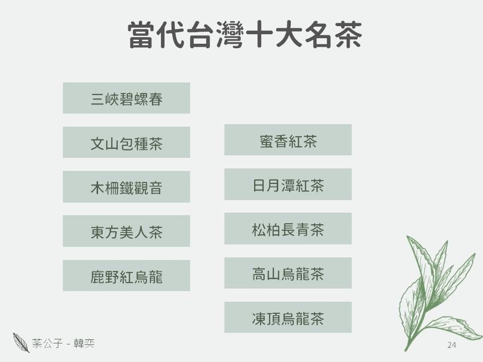
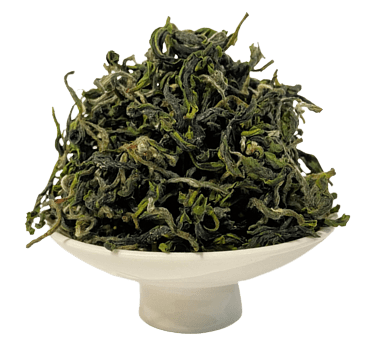
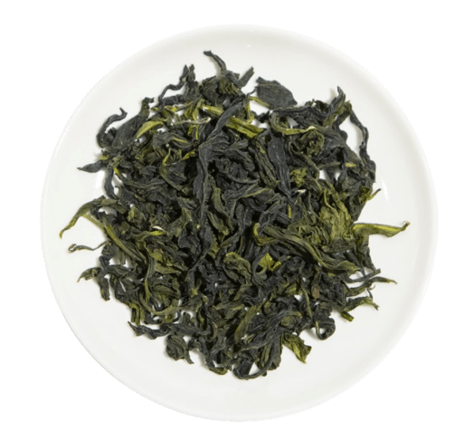
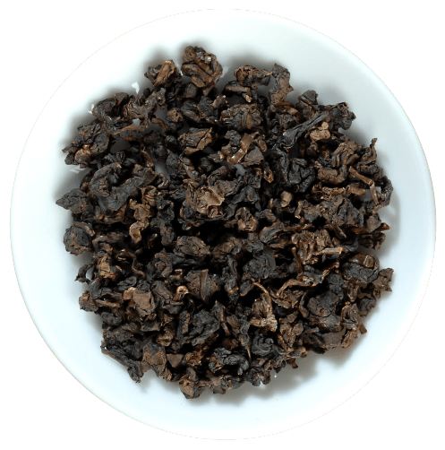
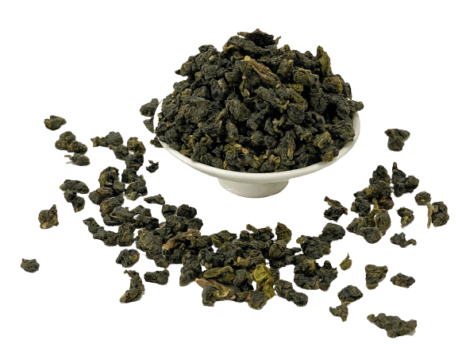
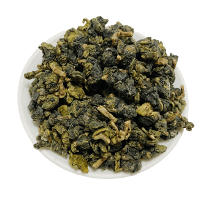
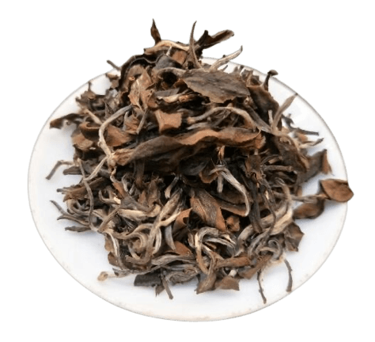
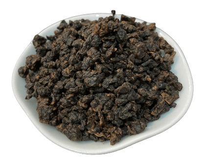
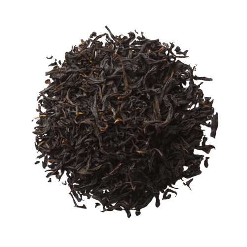
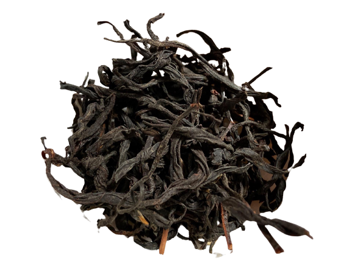

當代的十大名茶
引用時間:2023/10/20
引用出處: 荼公子 韓奕 | 台灣十大名茶

荼公子以2020年市場作為分野標準，列出最具影響力的十款台灣茶
荼公子以2020年市場作為分野標準，列出最具影響力的十款台灣茶

三峽碧螺春
三峽碧螺春

文山包種茶
文山包種茶

木柵鐵觀音
木柵鐵觀音

四季春
四季春

高山烏龍茶
高山烏龍茶
三峽碧螺春
Bi Luo Chun
- 「碧」指外觀碧綠清澈，像翡翠顏色般的翠綠
- 「螺」就是茶芽外形細緊彎曲似螺旋形、白毫
- 「春」季上品
- 新北市三峽地區地方特色茶
- 有全臺灣最嫩採摘技術
- 綠豆仁、牧草、甘草、海苔、甘蔗、柑橘底
- 過去這個區域曾叫做『海山茶』列入十大名茶，也包括有三峽所產的龍井、包種茶
文山包種茶
Paochong
- 大坪林地區，條型，通常偏綠
- 製造包種茶最佳的品種是青心烏龍，民間稱為「種仔」種，有可能因而得名
- 目前認為包種茶之名，起源於其包裝方式
- 因為茶行會以紙包裝四兩茶葉，最後加上店章，因而稱為包種茶
- 有可能是色種茶之誤
木柵鐵觀音
Tieguanyin
- 具有金屬味，重烘焙，揉球緊實耐泡
- 觀音韻；正欉鐵觀音；紅心歪尾桃
- 未焙火或輕焙火的鐵觀音，茶湯呈黃到橙紅
- 中焙火或重焙火者，則由橙紅到棕紅，湯色明亮清澈見底，味濃而醇厚，微澀中帶甘潤，並有弱果酸味
松柏長青茶
Sijichun
- 原名埔中茶，源自南投名間松柏坑，為海拔200-400的丘陵、台地，為當時產量最大的區域，而後擴張到南投名間地區為茶葉集中製作地點，因而富有茶葉製作技術與特定標準的傳統延續
- 受到南投縣政府推動的復興計畫所影響，當時的總統蔣經國起名為「松柏長青」
- 最早試驗金萱與翠玉的地方，現在四季春茶的大本營
台灣高山茶
High Mountain Oolong
凍頂烏龍茶

東方美人茶
東方美人茶

鹿野紅烏龍
鹿野紅烏龍

蜜香紅茶
蜜香紅茶

日月潭紅茶
日月潭紅茶
凍頂烏龍茶
Dong Ding Oolong
- 茶湯水色會成金黃色，香氣清香撲鼻，茶湯入口豐富活性有生津，落喉韻味強經得起高溫、長時間浸泡是凍頂茶的特色
- 從產區地名轉變為商品名稱
- 強調了揉捻『團揉』步驟
- 工序主要為凋萎、浪菁、殺菁、揉捻、毛火烘焙、包揉、足火、烘乾等， 15%～30%氧化發酵程度
- 呈現半球型狀的茶乾，中重發酵、重焙火的茶
- 紅水烏龍 Vs. 高山烏龍茶 的原料
東方美人茶
Oriental Beauty
- 茶芽白毫茶尖顯著
- 茶湯水色明亮豔麗橙紅色
- 主要品種青心大冇、青心烏龍、金萱
- 桃竹苗、新北地區生產
- 是部分發酵茶的青茶之中，發酵程度較高的茶品，發酵度為60-70%
- 茶樹嫩芽經茶小綠葉蟬，吸食後長成之茶芽，稱為「著涎」的茶菁，茶葉品質的好壞決定在「著涎」的程度
- 採摘一心二葉的最高品質，葉身呈白、綠、黃、紅、褐五色相間，有濃濃的蜂蜜香、熟果味
鹿野紅烏龍
Red oolong
- 琥珀色顯豔紅、清澈明亮
- 外型烏黑油亮，球型緊結
- 焦糖甜香，入口穿鼻
- 需要烘焙，重發酵，低海拔茶款
- 廣義屬於青茶的一種
蜜香紅茶
Honey Black Tea
- 東半部製法以小葉種紅茶為主
- 將受蟲害的茶樹以曬菁方式提高香味
- 品質與蟲害程度呈正相關
- 實務上甚至有炒菁進行改良（非傳統）
- 因無毒農業、有機農法而興起
- 有高山茶版的紅茶
- 因產地春冬季反而比夏季好
日月潭紅茶
Sun Moon Lake Black Tea
- 日治時期技術傳承
- 紅茶之鄉
- 全發酵茶，臺灣的西半部派系
- 以大葉種 阿薩姆、紅韻、紅玉
- 夏、秋為主要產季
- 以不曬青、重揉捻，最後乾燥製成條型工夫紅茶，味道沉重、木質調明顯，收歛感強，釋出速度快
地方特色茶
- 港口茶
- 六龜山茶
- 龍潭龍泉茶
- 石門鐵觀音
- 金萱烏龍茶
請贊助荼公子創作
目前初步並沒什麼募資頁面，但會持續把泡法們做出來， 若是小額贊助可以先在Youtube黃金會員，以訂閱方式 先提供小額支持我們創作組經費！ 或是至『跟著公子買茶茶』以購買茶葉方式提供贊助費用。